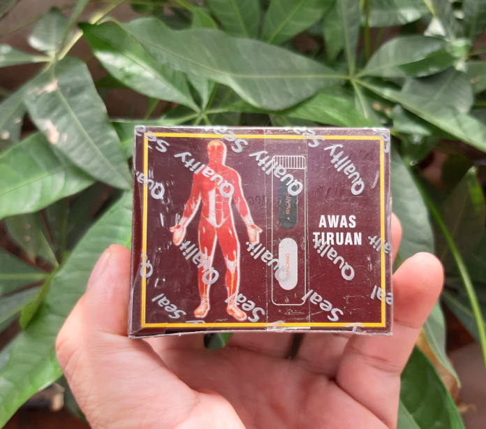
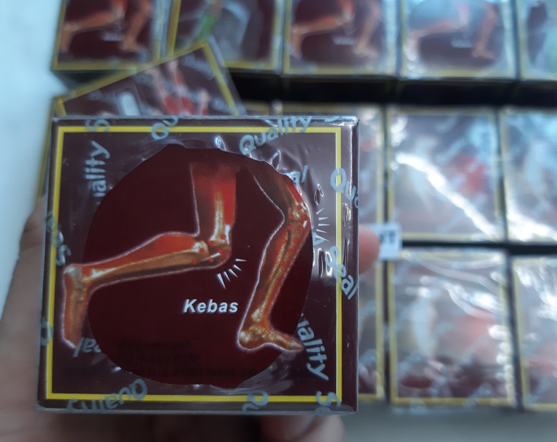

THUỐC TRỊ ĐAU NHỨC XƯƠNG KHỚP HIỆU QUẢ MÀ AN TOÀN¶
.jpg)
Hỏi:¶
Tôi năm nay trên 60 tuổi, mắc căn bệnh đau nhức lưng ê ẩm, đặc biệt là trở trời hay lúc lạnh Không biết có thuốc trị đau nhức xương khớp nào hàng đầu không nhỉ khi đầu tôi nghĩ là do mình ngồi khá nhiều và có tuổi buộc phải mắc như thế.
Thế nhưng mấy năm nay bệnh càng ngày căn bệnh càng trầm trọng hơn. Mới đây nhất tôi đi thăm khám bệnh bác sĩ có chuẩn đoán là tôi đang mắc bệnh thoái hóa cột sống cũng như cho 1 đống thuốc tây về dùng mặc dù vậy chỉ đỡ được vài hôm hết lại đau.
Nghe kết quả xong cũng buồn cũng như lo lắng vô cùng vì căn bệnh này tương đối khó khám khỏi. Tôi muốn xin mọi người lời khuyên để trị tốt hơn cũng như học kinh nghiệm của người đã mắc như tôi. Tôi trước đi làm cho là dân văn phòng ngồi khá nhiều cần xương khớp thoái hoá nhanh hay sao ấy.
Trả lời:¶
Đau nhức xương khớp là biểu hiện hay thấy ở người già do tác động của quá trình lão hóa diễn ra bên trong cơ thể, làm cho xương khớp dần lão hóa cũng như trở nên yếu dần. Một số cơn đau nhức xảy ra gây nên tác động khá lớn đến chất lượng giấc ngủ của người già cũng như chức năng vận động phổ thông. Dưới đây là những sản phẩm thuốc khám đau nhức xương khớp dành riêng cho người già bạn có khả năng Cùng tìm hiểu.
Các triệu chứng của cơn đau nhức xương khớp ở người già¶
Mức độ đau nhức xương khớp ở người già có thể khác nhau, nhưng lúc cơn đau xuất hiện đều sẽ mang theo các triệu chứng và đặc trưng dưới đây: + lúc ấn vào một số khớp cảm thấy nhói đau.
Tê mỏi cũng như cứng cơ khiến cho cử động không linh hoạt.
Cơ thể mệt mỏi cũng như ngủ không yên giấc.
Khớp bị sưng, đỏ và nóng.
vùng khớp đau nhức bị ngứa gây ra cảm giác tương đối khó chịu.
Lực vận động mắc suy giảm.
Những Loại thuốc xương khớp mà tôi thất tốt nhất từ trước tới nay¶
1. Thuốc xương khớp malaysia¶
Viên uống - thuốc xương khớp malaysia được sản xuất bởi Malaysia , đây là sản phẩm có lợi ích đẩy lùi trường hợp đau nhức xương khớp ở người già, an toàn cũng như hiệu quả cho người sử dụng
Viên uống Mujarhabat Kapsul
Là sản phẩm được người tiêu dùng Malaysia tin dùng, thành phần chính là các loại thảo dược thiên nhiên, an toàn cho người sử dụng:
Công dụng: chữa đau nhức xương khớp, hỗ trợ điều trị thoái hóa đốt sống, giảm đau lưng, điều trị đau thần kinh tọa.
Mujarhabat Kapsul
Mujarhabat Kapsul, được biết đến rộng rãi tại Việt Nam với tên “Thuốc xương khớp Malaysia Đỏ”. Thuốc được bào chế hoàn toàn từ 100% thảo dược Malaysia, sản xuất theo công nghệ tiên tiến của Đức và được đánh giá là sản phẩm đông y hàng đầu trong điều trị bệnh lý xương khớp của Malaysia.
Thành phần của thuốc bao gồm: Sâm Malaysia, Ngũ gia bì, Bạch thược, Phòng phong, Tần giao, Đỗ trọng, Quế chi, Sinh khương, Ngưu tất, Cam thảo, Đại táo, Nhũ hương, Lộc nhung và Tục đoạn.
Với những thành phần tự nhiên bổ dưỡng như trên, thuốc chữa viêm khớp của Malaysia Mujarhabat Kapsul mang lại công dụng:
Cách dùng:
Sử dụng theo đường uống, dùng sau bữa ăn, 1-2 viên/ngày với trường hợp đau nhẹ, 2-4 viên/ngày với trường hợp đau
nặng. Khi đã giảm đau thì dùng 1 viên/ ngày.
Giá bán thuốc xương khớp malaysia¶
Thuốc chữa bệnh đau nhức xương khớp malaysia được bán 100.000 VNĐ/hộp.
Liên hệ mua thuốc xương khớp malaysia Điện thoại: 0964.421.551
2. Thuốc Jex Max của Mỹ chữa bệnh đau nhức xương khớp¶
Jex Max là thuốc thăm khám đau nhức xương khớp dành cho người già hàng đầu của Mỹ, sản phẩm được nghiên cứu và sản xuất bởi công ty Công ty St-Paul Brands.
Viên uống Jex Max là sự quan hệ của khá nhiều mẫu thảo dược quý giá trong tự nhiên với các dưỡng chất sinh học có trong thế hệ mới, bởi vì vậy sản phẩm đã mang lại thành công giảm đau nhức khá tốt cũng như đảm bảo đối với người già.
Thành phần:
Peptan
Undernatured type II collagen
Turmeric Extract
White Willow Bark
Chondroitin Sulfate
…
Công dụng:
Thắc mắc các dưỡng chất cần thiết để tái tạo lại những sụn khớp bị tổn thương cũng như nuôi dưỡng chúng trở buộc phải chắc khỏe hơn, từ đó những khớp xương sẽ hoạt động chắc khỏe và dẻo dai hơn.
Sản phẩm có tác dụng phòng nguy cơ mắc một số bệnh lý về xương khớp ở người già thêm như loãng xương, thoái hóa khớp,…
Phương pháp dùng:
Uống 1 viên vào sau bữa ăn, hàng ngày sử dụng khoảng 2 viên sau bữa ăn sáng cũng như chiều.
nếu mắc đau nhức ở mức độ nặng bạn có thể sử dụng khoảng 3 viên/ngày.
Giá thành tham khảo:
Thuốc thăm khám đau nhức xương khớp Jex Max dành cho người già của Mỹ được bán trên thị trường với mức phí khoảng 340.000 VNĐ/hộp.
Thuốc Jex Max của Mỹ chữa bệnh đau nhức xương khớp
Có thể bạn tìm hiễu thuốc xoa bop trị đau nhức hiệu quả trong 30 phút cho bạn tham khảo:
Thuốc xoa bóp trị Đau nhức xương khớp TIPUTA - Thương hiệu uy tín 3 miền được HTV trao tặng giảm đau nhức xương khớp
2. Viên sủi đặc chữa bệnh đau nhức xương khớp Gen S Effer¶
NGĂN CHẶN tác hại hiểm nguy, MANG LẠI HỆ XƯƠNG KHỚP KHOẺ MẠNH – DẺO DAI LÀ SỨ MỆNH CỦA VIÊN XƯƠNG KHỚP GEN S EFFER Viên khớp Gen S Effer dạng viên sủi có tác dụng giúp đỡ giảm các dấu hiệu đau nhức xương khớp, thoái hóa đốt sống, song song giúp xương khớp chắc khỏe và khiến cho chậm thời kỳ thoái hóa khớp.
Viên khớp dạng sủi Gen S Effer là sự quan hệ hoàn hảo giữa các dược chất cao cấp và sụn vi cá mập, được sản xuất hoàn toàn theo công nghệ Nhật Bản
Thành phần Gen S Effer thành phần 100% tự nhiên với sự quan hệ từ các hoạt chất hỗ trợ xương khớp hiệu quả nhất trên thế giới trong đấy có SỤN VI CÁ MẬP cùng những dược liệu quý hiếm
Thành Phần trong mỗi viên xương khớp Gen S Effer :
Glucosamin HCL: 200mg
Collagen type II: 50mg
Cao khô nhũ hương: 20mg
Methyl sulfonyl methan: 10mg
Chondroitin sulfat: 10mg
Cao bạch quả: 10mg
Magie oxide: 10mg
Phụ liệu: vừa đủ 1 viên
Viên sủi đặc chữa bệnh đau nhức xương khớp Gen S Effer
Công dụng
Với sự quan hệ tuyệt vời của một số dược liệu quý tự nhiên không lợi ích phụ, sản phẩm viên khớp Gen S Effer đem đến một số tác dụng như:
Giúp bổ sung dưỡng chất cho khớp, hỗ trợ làm trơn ổ khớp & giúp khớp vẫn động linh hoạt
Giúp thông kinh lạc, giúp giảm tê bì chân tay, đau mỏi vai gáy, trừ phong tê không tốt.
hỗ trợ giảm những cơn đau nhức do xương khớp gây ra giúp vân động dễ dàng hơn
Giúp làm giảm nguy cơ thoái hóa khớp, giảm biểu hiện viêm khớp, khô khớp, đau mỏi khớp
Giúp gia tăng cường tuần hoàn máu lên não, tinh thần sảng khoái, giấc ngủ sâu và ngon.
Theo đánh giá từ một số giới chuyên môn và đời thực thời kỳ sử dụng từ những người mắc viêm khớp thì tình trạng đau nhức hay sưng viêm sẽ giảm sau vài ngày dùng
Cách dùng
Hoà tan 1 viên sủi với 100ml nước rồi uống
sử dụng 1 viên/lần sau ăn 30 phút, 2 lần/ngày
Giá bán
Viên sủi xương khớp Gen S Effer có giá niêm yết là 1.700.000đ / hộp 20 viên.
3. Khang Thọ Gold giảm đau nhức xương khớp¶
Đứng ở vị trí thứ 3 thuốc chữa trị đau nhức xương khớp hàng đầu Hiện tại là Khang Thọ Gold. Sản phẩm được giới chuyên môn cũng như người sử dụng đánh giá cao về chất lượng.
Đối với những người bị mắc bệnh xương khớp ở giai đoạn cấp tính, chỉ buộc phải mất từ 4-6 tuần sử dụng là trường hợp đau mỏi sưng viêm sẽ được khắc phục dứt điểm. Khang Thọ Gold mang lại thành công lâu dài và đảm bảo tuyệt đối với thể chất.
Thành phần:
Viên uống Khớp Khang Thọ được điều chế hoàn toàn từ những dòng thảo dược quý trong tự nhiên. Điển hình như: ngũ gia bì, kê huyết trắng, uy linh tiên, tang ký sinh, độc hoạt gia tang ký sinh …
Công dụng:
Khoanh tại vùng và làm cho sạch ổ viêm, giảm nhanh chóng một số cơn đau xương khớp.
Gia tăng sức đề kháng, khai thông khí huyết giúp cải thiện hiện tượng sưng đau, bầm tím, viêm, bong gân do chấn thương.
Hỗ trợ chữa bệnh những căn bệnh thoái hóa khớp, viêm xương khớp, viêm khớp dạng thấp, thoát vị đĩa đệm …
Nâng cao tiết dịch, bảo vệ sụn khớp, cơ gân giúp việc vận động linh hoạt hơn.
Ổn định tình huống sức khỏe xương khớp, phòng ngừa tái phát trở lại.
Khang Thọ Gold giảm đau nhức xương khớp
4. Glucosamine Orihiro trị xương khớp nhật¶
Thuốc chữa đau nhức xương khớp Glucosamine Orihiro dành cho người già có nguồn gốc xuất xứ từ Nhật Glucosamine Orihiro là thuốc khám đau nhức xương khớp được sản xuất bởi công ty dược phẩm Orihiro tốt nhất tại Nhật Bản.
Đây là sản phẩm được đánh giá cao trong việc đẩy lùi những cơn đau nhức xương khớp do bệnh viêm khớp, loãng xương cũng như thoái hóa xương khớp dẫn tới.
Thành phần:
Chiết xuất vây cá mập
Chiết xuất mầm đậu nành
Glucosamine
Đậu nành
Canxi
Kẽm
Vitamin
….
Công dụng:
Giúp đỡ cơ thể tổng hợp ra những dòng protein cũng như Lipid Glycosyl có công dụng khiến cho lành một số tổn thương ở sụn khớp.
Bổ sung khác một số dưỡng chất quan trọng giúp xương khớp trở bắt buộc chắc khỏe, dẻo dai và linh hoạt hơn.
Đẩy lùi các triệu chứng đau cũng như nhức mỏi xảy ra tại khớp, đồng thời giúp đỡ một số bệnh lý xương khớp phổ biến ở người già như thoái hóa khớp, viêm khớp,…
Cách sử dụng:
Lấy khoảng 5 viên để uống trong bữa ăn, dùng khoảng 10 viên/ngày.
Giá thành tham khảo:
Thuốc trị đau nhức xương khớp Glucosamine Orihiro dành riêng cho người già của Nhật được bán trên thị trường với kinh phí khoảng 750.000 VNĐ/hộp.
5. Thuốc chữa trị đau nhức xương khớp Habelric dành riêng cho người già¶
Chữa đau nhức xương khớp cho người già bằng thuốc Habelric của Mỹ Habelric là thuốc điều trị đau nhức xương khớp có nguồn gốc xuất xứ từ Mỹ.
Sản phẩm được sản xuất trên dây chuyền hiện đại, được y bác sĩ đánh giá là an toàn đối với thể chất cũng như không gây nên tác dụng phụ.
Thuốc có lợi ích giảm đau nhức vô cùng nhanh chóng chỉ sau vào lần sử dụng và bổ sung nhiều dòng dưỡng chất thiết yếu cho xương khớp.
Thành phần:
Sụn cá mập
Acid Hyaluronic
Glucosamine
Methyl Sunfonyl Methane
Boswelia seratta ext
Magnesium stearate
Gelatin
…
Công dụng:
Kích thích tái tạo lại chất nhờn giúp bôi trơn sụn khớp, từ đấy một số khớp xương sẽ hoạt động linh hoạt và dẻo dai trở lại.
Đẩy lùi một số cơn đau nhức do các bệnh lý gây nên như viêm xương khớp, thoái hóa khớp,…
Bổ sung canxi cho cơ thể giúp giúp đỡ điều trị căn bệnh thiếu canxi, loãng xương,…
Giải pháp dùng:
Uống hai viên vào sau mỗi bữa ăn chính
Không dùng sản phẩm cho một số người dị ứng với thành phần trong thuốc, trẻ em chưa đủ 18 tuổi.
Giá thành tham khảo:
Thuốc thăm khám đau nhức xương khớp dành riêng cho người già Habelric của Mỹ được bán trên thị trường với chi phí khoảng 890.000 VNĐ/hộp.
6. Thuốc chữa đau nhức xương khớp Jointlab dành riêng cho người già¶
Thuốc Jointlab có công dụng bớt đau xương khớp quá hiệu quả chỉ sau thời gian rất ngắn sử dụng Jointlab là thuốc chữa trị đau nhức xương khớp và thoát vị đĩa đệm mang lại thành công vô cùng mau chóng chỉ sau 10 ngày sử dụng.
Sản phẩm được chiết xuất 100% tự nhiên cần vô cùng an toàn đối với tình huống sức khỏe, hoàn toàn có thể yên tâm khi sử dụng để chữa trị trường hợp đau nhức xương khớp cho người già.
Thành phần:
Methylsulfonylmethane
Glucosamine
Chondroitin Sulfate
Vitamin
Dây đau xương
Tang ký sinh
…
Thuốc chữa đau nhức xương khớp Jointlab dành riêng cho người già
Công dụng:
Đẩy lùi kịp thời một số cơn đau nhức cũng như sưng viêm tại xương khớp do giai đoạn thoái hóa đĩa đệm gây.
Trả lời các dưỡng chất cần thiết cho cơ thể, tăng trao đổi chất cũng như giúp đỡ làm cho lành một số sụn khớp mắc tổn thương. Từ đó, ngăn chặn quá trình thoái hóa khớp tiếp tục diễn ra khiến tình trạng bệnh trở buộc phải tồi tệ hơn.
Bổ sung khác dịch khớp giúp những khớp hoạt động linh hoạt hơn, ngăn chặn tình trạng tê liệt hoặc co cứng xảy ra, bên cạnh đó tăng độ bền chắc cũng như đàn hồi của sụn xương.
Phương pháp dùng:
Dùng 2 lần/ngày, mỗi lần một viên.
Giá thành tham khảo:
Trên thị trường có bán sản phẩm thuốc thăm khám đau nhức xương khớp Jointlab dành cho người già với mức phí khoảng 1.190.000 VNĐ/hộp.
7. Viêm khớp Tâm Bình trị đau nhức xương khớp cho người già¶
Viêm khớp Tâm Bình giảm đau xương khớp dành cho người già Viên uống Viêm khớp Tâm Bình được sản xuất bởi Công ty TNHH Dược phẩm Tâm Bình, đây là sản phẩm có lợi ích đẩy lùi đau nhức xương khớp ở người già an toàn cũng như hiệu quả mà người mắc bệnh.
Thành phần:
Hy thiêm
Tục đoạn
Ba kích
Đương quy
Đỗ trọng
Cẩu tích
Ngưu tất
Độc hoạt
Bột mã kinh phí chế
Bột thương truật
Công dụng:
Làm giảm một số dấu hiệu đau nhức xương khớp, giúp đỡ thăm khám căn bệnh thoái hóa khớp cũng như viêm khớp ở người già.
Cải thiện sức mạnh gân cốt, nâng cao tuần hoàn máu cũng như làm chậm thời kỳ thoái hóa khớp diễn ra.
Cách dùng:
Mỗi lần lấy khoảng 3 viên uống vào trước bữa ăn 30 phút, sử dụng với liều lượng 2 lần/ngày
Giá thành tham khảo: Thuốc chữa bệnh đau nhức xương khớp Viêm khớp Tâm Bình được bán trên thị trường với chi phí khoảng 100.000 VNĐ/hộp.
8. Thuốc GHV BONE khám đau nhức xương khớp với CN bột đạm thủy phân¶
Viên khớp GHV Bone là sản phẩm giúp đỡ điều trị các bệnh về xương khớp thứ nhất cũng như duy nhất chứa BỘT ĐẠM THỦY PHÂN (HPP 2020) chiết xuất từ mô sụn các sinh vật biển.
Đây là kết quả nghiên cứu thuộc Chương trình Phát triển Công nghiệp Hóa dược Quốc gia, hợp tác song phương giữa Viện Hàn lâm KH&CN Việt Nam và Viện Hàn lâm Khoa học Liên Bang Nga.
Chủ nhiệm đề tài khoa học : GS.TS Phạm Quốc Long (Viện Trưởng Viện Hóa học các hợp chất thiên nhiên). Mã số đề tài: CNHD.ĐT.012/09-11
Thành phần
Mỗi viên Viên Khớp GHV Bone có chứa:
Bột đạm thủy phân (peptit mạch rất ngắn có hoạt tính cao) 100mg
Glucosamine sulfate NaCl 250mg
một số thành phần khác: Acid ascorbic, Canxi stearate, Rutin vừa đủ 1 viên 500mg
Tác dụng
Sản phẩm được chiết xuất 100% thành phần từ thiên nhiên an toàn, hiệu quả, ảnh hưởng sâu cũng như cải thiện toàn diện những vấn đề về xương khớp.
Sau đây là những lợi ích tuyệt vời của viên uống GHV Bone mà bạn không thể vứt bỏ khi lựa chọn sản phẩm này:
kịp thời giảm đau nhức hiệu quả cho người đau nhức xương khớp
hạn chế trường hợp khô khớp, đau khớp khi chuyển động mạnh
Giúp tái tạo và phục hồi một số mô sụn bị tổn thương
khiến chậm giai đoạn lão hóa xương khớp, mô sụn ở người cao tuổi
phòng tránh cũng như chữa tổng thể các bệnh lý liên quan tới xương khớp
Cách dùng
Uống 4-6 viên/ ngày chia làm cho 2 lần ( quan trọng phải kiên nhẫn tuân thủ đủ phác đồ sử dụng từ 2-6 tháng tùy hiện tượng bệnh
Người muốn dự ngăn ngừa căn bệnh khớp Uống 2 viên/ ngày. + Nên giao hợp xoa bóp cũng như đi lại nhẹ nhõm các khớp để nâng cao lượng máu lưu thông mang theo acid amin từ bột đạm thủy phân (HPP 2020) đến sửa khám, tái tạo và hồi phục tổ chức khớp. + Cảm giác giảm viêm đau chỉ đến sau lúc khớp dần được cải thiện, thông thường người bệnh sẽ phải kiên nhẫn trong khoảng 1-2 tháng trước tiên. + Một số người chẳng may mắc bệnh nhạy cảm có khả năng đau tăng lên trong thời gian đầu sử dụng do ảnh hưởng tái tạo tổ chức khớp.
Giá bán
Sản phẩm hiện đang có giá bán niêm yết từ công ty là 1.050.000 VNĐ/ 1 hộp
9. Shark Cartilage Costar trị đau nhức xương khớp¶
Úc là đất nước nổi tiếng bởi các mẫu thuốc, thực phẩm chức năng dành cho chăm sóc cơ địa, làm đẹp. Tóm lại, sẽ thật thiếu xót ví dụ Hoanluu.com quên giới thiệu tới một số bạn thuốc điều trị đau nhức xương khớp Shark Cartilage Costar của Úc.
Mẫu thuốc này Không chỉ thế “gây bão” tại Úc mà còn được rất nhiều người Việt ưa chuộng. Thành công mà thuốc mang lại tuyệt vời tới mức, bệnh nhân thường không muốn chuyển qua bất cứ sản phẩm nào thêm.
Thành phần:
Thuốc điều trị đau nhức xương khớp Shark Cartilage Costar có thành phần chính là 100% xương sụn và cá mập. Song song là Glucosamine, MSM & Vitamin C, Chondroitin, canxi cũng như photpho.
Công dụng:
San sẻ dưỡng chất cũng như tái tạo lớp sụn cũng như chất nhờn ở đầu khớp, tránh thoái hóa khớp.
giảm thiểu viêm nhiễm, tổn thương tại phần khớp xương.
Tiết ra chất nhờn giúp những mô khớp được bôi trơn, khiến chậm thời kỳ lão hóa của khớp sụn.
Kích thích sản sinh những tế bào sụn, phòng và chữa một số căn bệnh thoái hóa khớp.
một số tác dụng thêm của thuốc: khám các bệnh về mắt, bồi bổ cơ thể, …
Cách dùng:
Uống 2-3 viên hàng ngày sau mỗi bữa ăn. Kiên trì sử dụng khoảng 3 tháng để có hiệu quả hàng đầu.
Giá bán: 670.000 đồng / Họp 365 viên.
Đối với một số cơn đau khớp mãn tính
một số bệnh lý xương khớp nặng nề như thoái hóa khớp, viêm khớp, gout, viêm cột sống dính khớp, viêm khớp vảy nến… là nguồn gốc dẫn đến trường hợp đau nhức xương khớp mãn tính. Những cơn đau xương khớp mãn tính thường kéo dài và khó điều trị tận gốc trong thời gian rất ngắn. Một số mẫu thuốc được chỉ định cho các người bệnh bị đau khớp mãn tính đấy là:
Thuốc kháng viêm
các người mắc đau khớp dai dẳng cần dùng các mẫu thuốc kháng viêm như Methotrexat, Sulfasalazine… Nhóm thuốc này vừa giúp giảm nhẹ cơn đau vừa giúp đỡ giảm viêm sưng khớp.
Thuốc kháng viêm không Steroid
Thuốc kháng viêm không chứa Steroid như Ibuprofen, Naproxen, Piroxicam… cũng được sử dụng cho trường hợp đau xương khớp mãn tính.
Tuy nhiên, các loại thuốc này bắt buộc phối hợp với nhóm thuốc bớt đau nhức hoặc thuốc giãn cơ có công dụng giảm đau nhức để giảm bớt liều lượng của thuốc kháng viêm (uống liều lượng thuốc kháng viêm cao không chất lượng cho sức khỏe).
Note
Liên hệ Thảo mộc HHT - Điện thoại: 0964.421.551